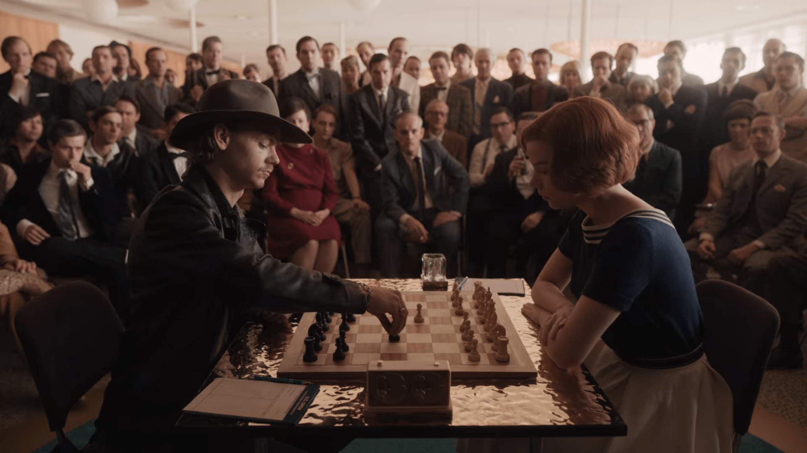

Exploring the greatest players in chess history

Chess is a two-player strategy board game. Everyone knows it. The version we know today came up around the 16th century. A game involving pure skill and no luck. Being the best or at least one of the best at such a game is an incredible achievement. The greats of any endeavor are never forgotten like Albert Einstein and Isaac Newton in Science and Mathematics or William Shakespeare in literature. Or in more traditional sports like with Michael Jordan and Lebron James (the actual GOAT) in basketball. That begs the question, "Who were the greatest players of chess?". The three widely agreed upon best chess players of all time are Robert (Bobby) James Fischer (my favorite), Garry Kasparov, and Magnus Carlsen. These players each have their own unique accomplishments that set them apart from the others. As for the true best, that is still debated. Most people would likely say Carlsen today, but there are still people who argue for Kasparov. Feel free to check out each of these players more in-depth in the links below!
This website covers Fischer, Kasparov, and Carlsen.
More chess players will be added later.